See the intermediate steps
A video model predicts visual subgoals from the current observation and task instruction.
University of Minnesota Twin Cities
A distant goal tells the robot where to finish. Visual subgoals reveal how to get there,
and a policy prior gives each local search a useful starting point.
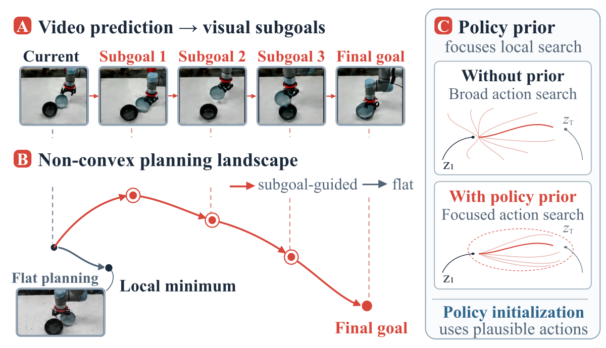
A video model predicts visual subgoals from the current observation and task instruction.
A learned policy initializes CEM around behaviorally plausible action sequences.
An action-conditioned world model evaluates candidates. The robot executes a short prefix and replans.
Latent world-model planning has shown promising results in goal-conditioned robotic manipulation, but remains challenging for long-horizon planning due to limited temporal guidance and inefficient action search. A distant visual goal provides little guidance for preparatory actions, while uninformed action sampling makes local optimization inefficient. We propose PILOT (Policy-Initialized Local Optimization with Temporal subgoals), which uses a video model to generate intermediate visual subgoals and a learned policy to initialize the cross-entropy method (CEM). CEM refines candidate action sequences toward each subgoal using an action-conditioned world model in a receding-horizon control loop.
In our primary real-robot evaluation across four UR5e manipulation tasks, PILOT achieves 68.8% success, compared with 55.0% without policy initialization, 13.8% for policy-only execution, and 0.0% for direct final-goal planning. Simulation results show that these gains persist over longer horizons: PILOT exceeds direct execution of the same policy by 30 percentage points on long Push-T tasks and by 22 percentage points on LIBERO-10.
Policy initialization also accelerates local optimization: on Push-T, CEM matches the cost reached by generic initialization after 10 iterations in only 4 iterations and reduces the final planning cost by 24.1% under the same sampling budget. These results show that combining temporal subgoals with policy-guided action search improves both long-horizon task execution and local planning efficiency.
Three complementary models, connected by a closed-loop planner.
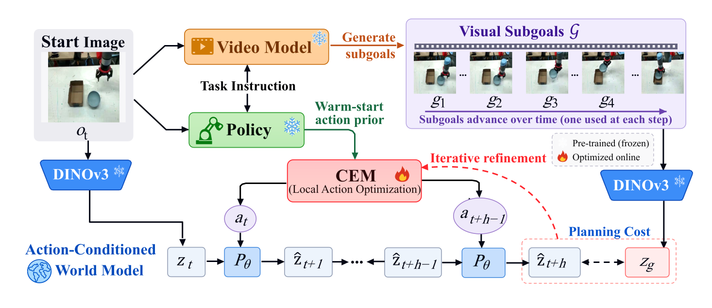
Generate a future video from the initial observation and language instruction. Select uniformly spaced frames as intermediate planning targets.
Use the policy’s action proposal as the initial CEM mean, then refine candidates against the current subgoal rather than executing the policy directly.
Minimize terminal latent distance to the target. Execute the first action, observe the new state, and repeat before advancing to the next subgoal.
Long-horizon tabletop manipulation on a UR5e with a fixed RGB camera.
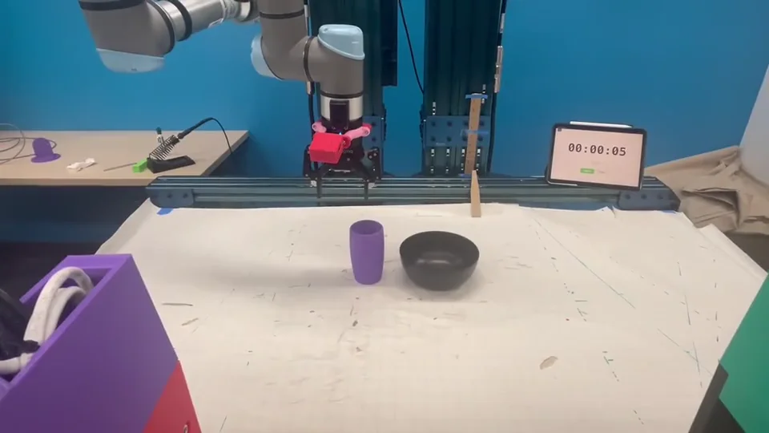
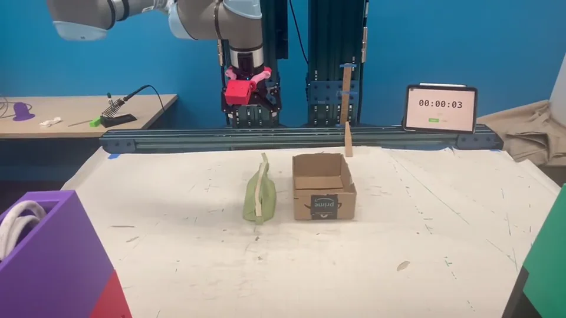
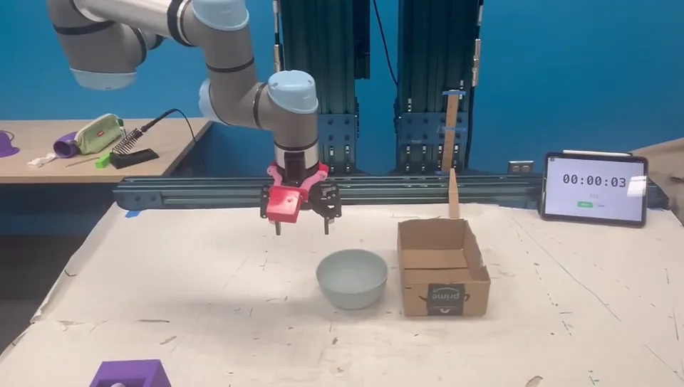
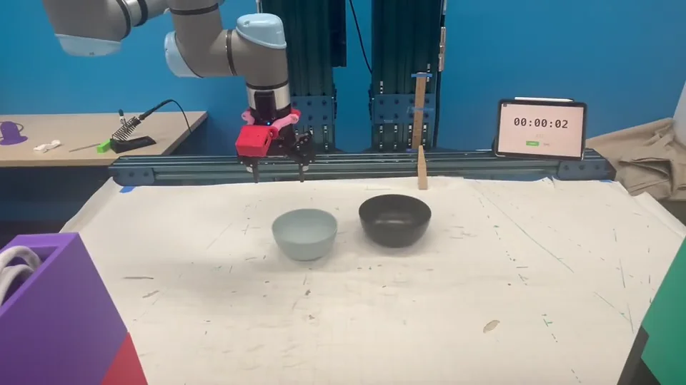
Real robot demonstrations shown at 4× speed. Select Enlarge for a larger player.

20 trials per task, 80 trials per method. All world-model variants share the same short prediction horizon.
Visual subgoals provide temporal guidance. Policy initialization adds a further 13.8 percentage points in average success.
| Method | Cup | Pencil Case | Bowl-Box | Bowl-Bowl | Average | 95% CI |
|---|---|---|---|---|---|---|
| Flat WM | 0/20 | 0/20 | 0/20 | 0/20 | 0.0% | [0.0, 4.6] |
| Policy only | 4/20 | 3/20 | 2/20 | 2/20 | 13.8% | [7.9, 23.0] |
| PILOT w/o prior | 8/20 | 5/20 | 14/20 | 17/20 | 55.0% | [44.1, 65.4] |
| PILOT Ours | 11/20 | 13/20 | 13/20 | 18/20 | 68.8% | [57.9, 77.8] |
Policy initialization improves performance under limited planning budgets
and provides a lower-cost starting point for CEM refinement.
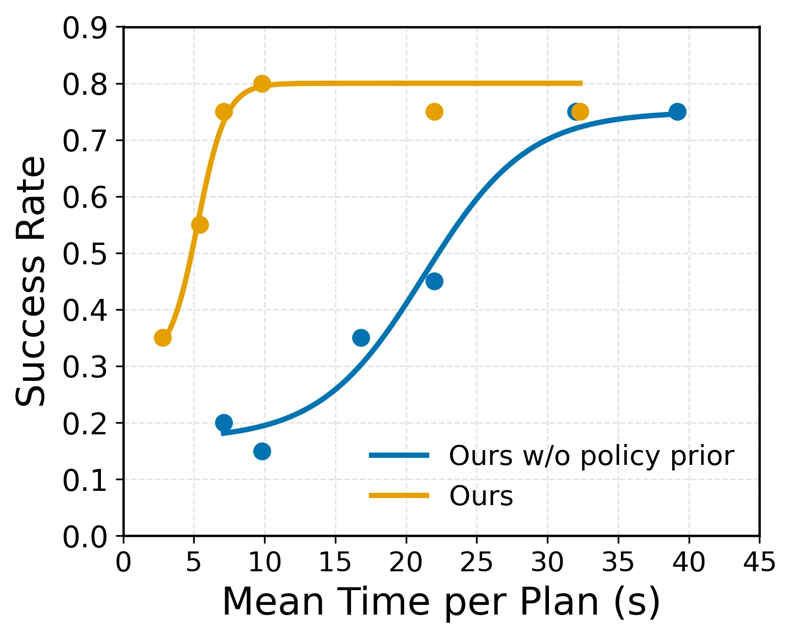
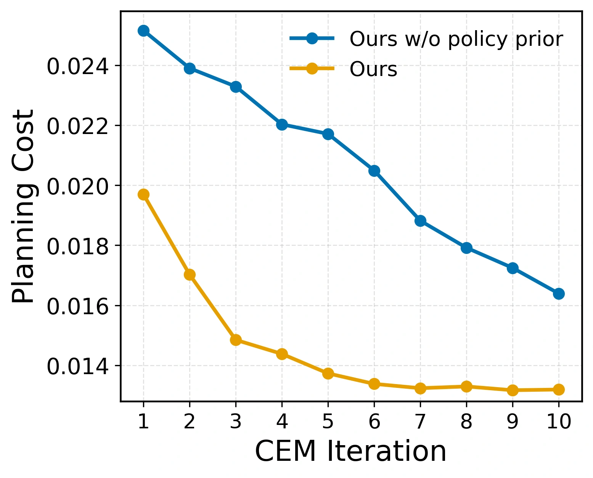
Controlled studies of task length, policy initialization, and the source of visual subgoals.
30 held-out initial states per length bucket. The prediction horizon stays fixed as task duration increases.
| Method | Short | Medium | Long |
|---|---|---|---|
| Flat WM | 33.3% | 0.0% | 0.0% |
| Flat WM + prior | 46.7% | 0.0% | 0.0% |
| Policy only 5 demos | 0.0% | 0.0% | 0.0% |
| Policy only 10 demos | 13.3% | 3.3% | 6.7% |
| Policy only 20 demos | 26.7% | 16.7% | 10.0% |
| Policy only 30 demos | 40.0% | 33.3% | 23.3% |
| PILOT w/o prior | 43.3% | 36.7% | 40.0% |
| PILOT Ours | 80.0% | 63.3% | 53.3% |
| PILOT (oracle) Expert subgoals | 90.0% | 93.3% | 83.3% |
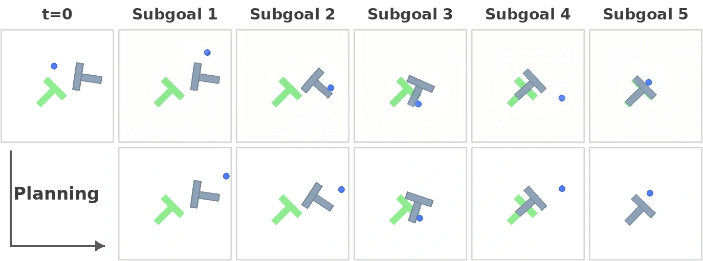
Even a weak prior improves the success–planning-time trade-off. The 30-demonstration prior exceeds 60% medium-task success at 8 seconds per planning call. Policy initialization reaches in four iterations the cost that generic initialization reaches in ten, and finishes 24.1% lower under the same sampling budget.
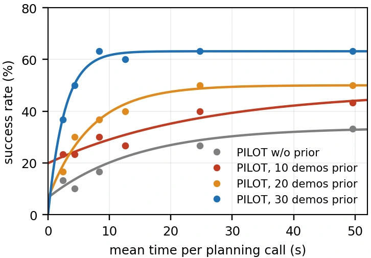
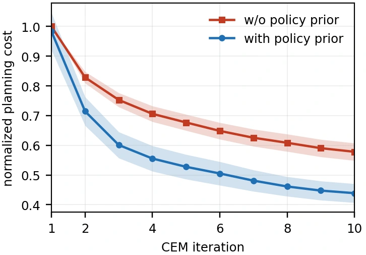
Short: expert episode length < 100 steps. Medium: 100–129. Long: ≥ 130. Wan uses 100 Push-T video demonstrations; the main policy prior uses 30 action demonstrations.
Ten language-conditioned, two-stage tasks on a Franka arm. Five held-out initial states per task, 50 trials per method.
| Method | Success rate |
|---|---|
| Flat WM | 0.0% |
| Flat WM + prior | 0.0% |
| Policy only | 38.0% |
| PILOT w/o prior | 22.0% |
| PILOT Ours | 60.0% |
| PILOT (oracle) Expert subgoals | 88.0% |
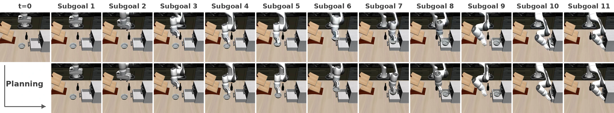
About the oracle reference. PILOT (oracle) replaces generated targets with frames from a held-out expert trajectory while keeping the policy, world model, and controller unchanged. It measures the effect of subgoal source and is not assumed to be a strict upper bound.
If you find PILOT useful for your research, please cite our paper using the following BibTeX entry:
@article{liu2026pilot,
title={PILOT: Guiding Long-Horizon World-Model Planning for Robot Manipulation with Visual Subgoals and Policy Priors},
author={Liu, Yang and Cui, Hanchen and Desingh, Karthik},
journal={arXiv preprint arXiv:2610.14335},
year={2026}
}